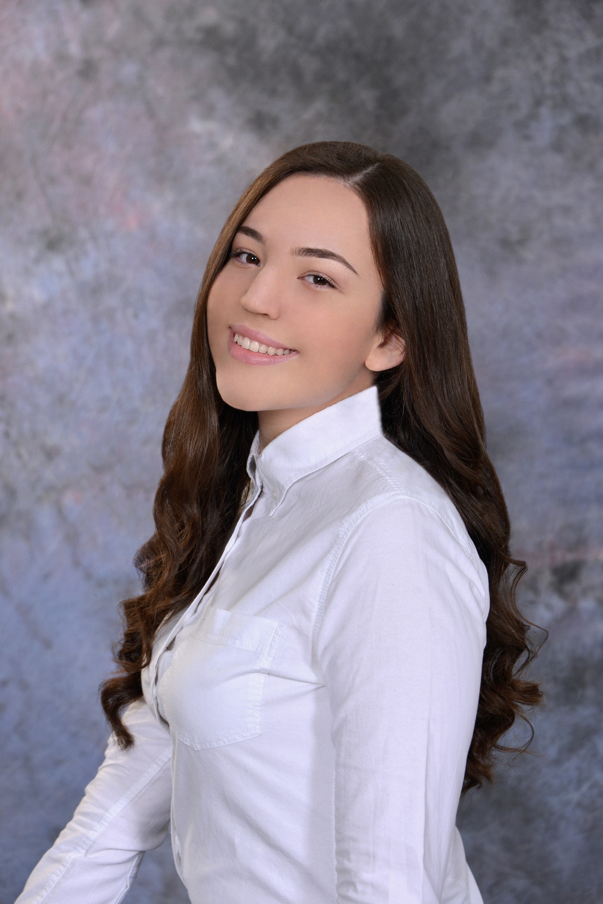
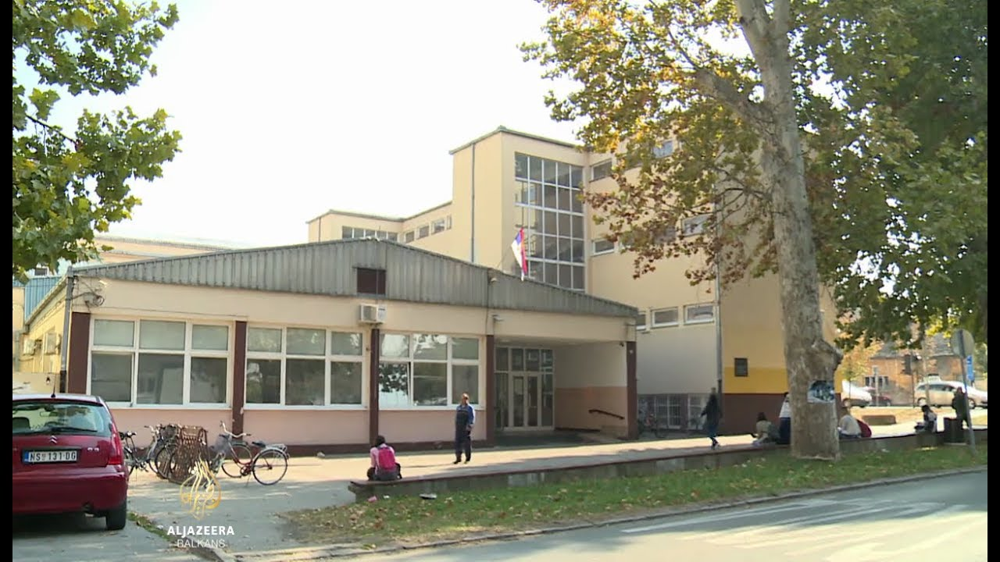

Пар речи о мени
Моје име је Јована Бугарчић. Имам 17 година и идем у трећи разред гимназије. Рођена сам 5. јуна 2005. године, у Чачку. Тата ми је из Чачка, а мама из Краљева. Доселили смо се у Бачку Паланку када сам имала 3 године. Имам млађег брата Богдана. Живела сам 2 године у Митишћу, у Русији. Говорим 4 језика: руски, француски, енглески и српски. Тренирам одбојку у одбојкашком клубу "Меркур".
Образовање
- ОШ "Свети Сава"
- Завршила сам основну школу "Свети Сава" у Бачкој Паланци, као вуковац. Ишла сам на такмичења из математике, физике и српског (граматика). У шестом разреду сам стигла до републичког такмичења из физике, а у седмом до републичког такмичења из српског.
- ШОМО "Стеван Христић"
- Завршила сам музичку школу "Стеван Христић" у Бачкој Паланци, такође са свим петицама и свирам клавир. Ишла сам на такмичења из солфеђа и клавира али никад нисам стигла до неког озбиљнијег нивоа такмичења.
- Гимназија "20. октобар" 
- Тренутно идем у општи смер гимназије "20. октобар" у Бачкој Паланци. Идем на такмичења из математике и српског (граматике).